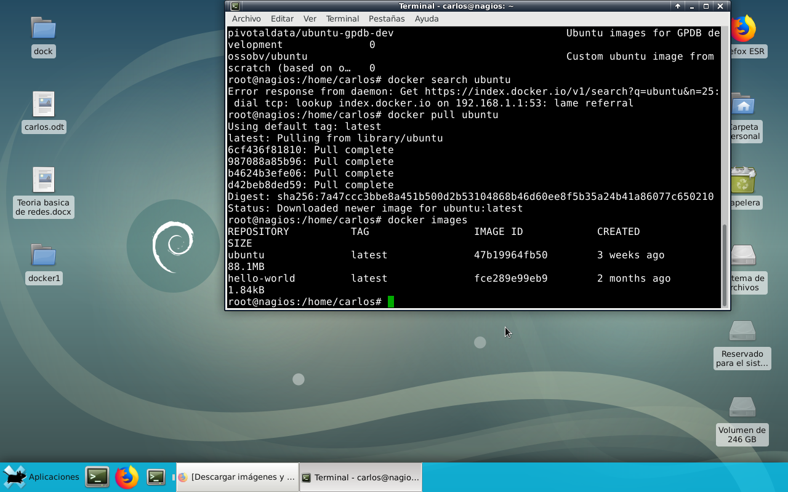

USO
Docker hub es un repositorio público en la nube, similar a Github, para distribuir los contenidos. Está mantenido por la propia Docker y hay multitud de imágenes, de carácter gratuito, que se pueden descargar y asi no tener que hacer el trabajo desde cero al poder aprovechar “plantillas”.

Docker search este comando nos permite buscar imagenes que se encuentran Docker hub, en la siguiente imagen vamos a buscar una imagen Debian”.
De esta manera podemos buscar imagenes que se encuentran Docker hub, en la siguiente imagen vamos a buscar una imagen Debian sin tener que hacerlo por consola”.
En la siguiente imagen muestra la busqueda de imagenes que hicimos con el comando search, ahora procedemos a descargarla colocando el comando docker pull y el nombre de la imagen que deseamos descargar
con el comando docker images, nos permite listar las imagenes que tenemos disponible
el comando tag te lista las versiones que estan disponibles en las imagenes que se encuentran en docker hub
para descargar la imagen despues de usar el comando tag se coloca de la siguiente manera y asi se descarga la version de la imagen
con este comando vamos a descargar y ejecutar nuestro primer hola mundo ,donde nos permite crearse ejecutarse mostrar este contenedor en pantalla y detenerse
con el comando docker ps nos muestra los container que se estan ejecutando actualmente

con el comando docker ps -a nos muestra los contenedores detenidos (exited) actualmente
con el siguiente comando vamos a listar el contenido de nuestro contenedor en este caso como lo muestra la imagen del contenedor ubuntu

con el siguiente comando vamos a crear un contenedor interactivo, donde se run es para correr el contenedor y pasamos los siguientes -i del estandar input que nos dejarar ingresar contenido en el contenedor y el comando -t para tener una terminal . y le pasamos el comando bash que es la consola que se utiliza en ubuntu.
alli vemos que estamos dentro del contenedor ubuntu y le pasamos el comando top y verificamos que funciona correctamente

con el comando docker images nos muestra la lista de las imagenes disponibles, con el comando docker images -- help nos muestra los comandos que podemos usar con el comando images, con el comando docker images -a nos muestra todas las imagenes, con el comando docker images -q nos muestra el id de las imagenes
ATRAS